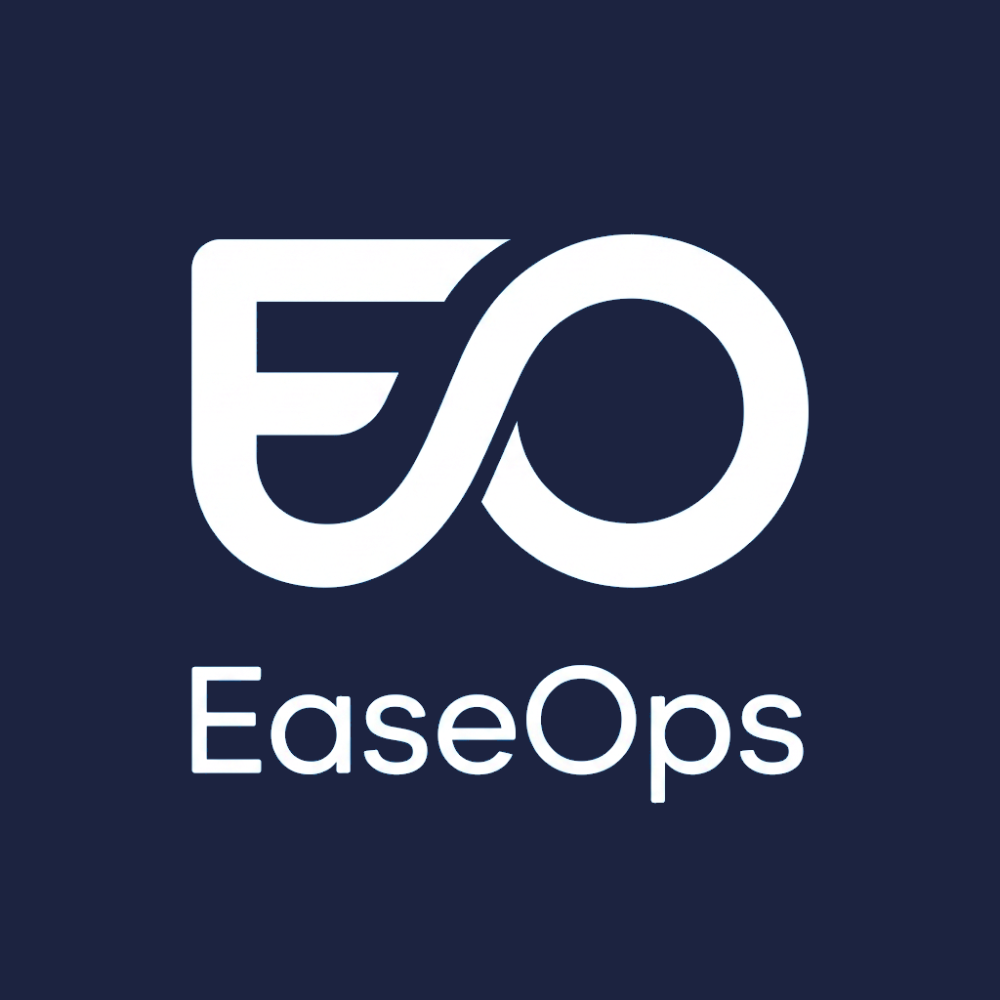

EaseOps Solutions
Systems. Automation. Analytics.
Operational clarity
The cost of fragmented operations
BEFORE
- Multiple storefronts
- Manual monitoring
- Constant context switching
- Spreadsheet reporting
- Operational blind spots
AFTER
- Unified operational visibility
- Centralized workflows
- Real-time awareness
- Automated reporting
- Faster decision making
"The problem isn't execution.
It's visibility."